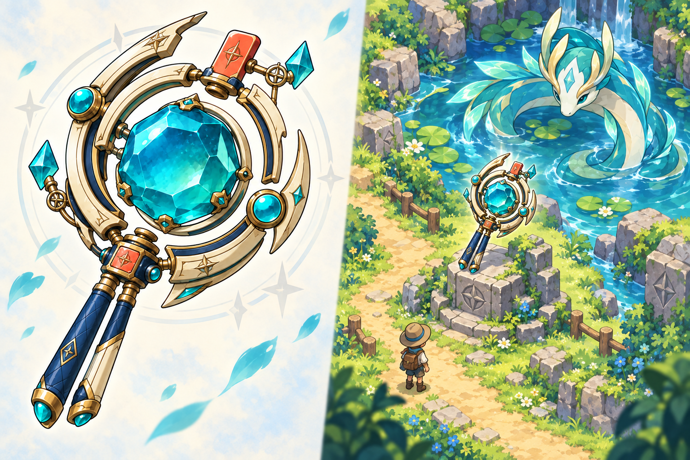

一件圣物 · 四种世界
万象重构镜
把同一件装备，放进不同的游戏世界。
看它如何被收藏，又如何在旅途中被发现。
固定对照条件
圣品SSR
同一器物 / 同一品阶 / 四套美术
风格概念图 · 尚未授予装备
美术方向
切换风格，保留器物身份
STYLE STUDY / 01
查看原尺寸 精灵冒险 · 赛璐珞

概念图暂未载入
请稍后重试，或切换另一套美术方向。
画面里的两个镜体，是同一件装备的两种呈现；池塘守护者独立栖息在场景中。
清晰色面，把复杂圣物画得轻盈
利落墨线收住三重开环，象牙白与古金用分层赛璐珞明暗塑形。青绿晶核保持通透，珊瑚扣件成为一眼可认的暖色记号。
沿着草地小径，发现池畔的光
明亮的冒险路线连接池塘与低台座。缩小后的镜体强化环形剪影和青色核心；原创长身守护者留在水边，建立装备与地域的联系。
IDENTITY, IN EVERY WORLD
换世界，
不换身份。
风格变化的同时，守住四个辨认点。
青绿切面晶核
镜体的视觉中心，也是地图远景中的识别色。
三重开环与桥接
象牙白与古金交叠；右上缺口保留断开、重连的结构。
珊瑚橙扣件
小面积暖色落点，固定器物的方向与性格。
深海蓝分叉握柄
用双支轮廓收束底部，避免变成无方向的普通圆镜。